O Projeto Vida é uma instituição dedicada a transformar a realidade de crianças, adolescentes e famílias em situação de vulnerabilidade social em Americana, através de educação, acolhimento, oficinas e apoio comunitário.
Crianças & Jovens Atendidos
Famílias Assistidas
Transparência & Gestão
Uma trajetória construída pela solidariedade, compromisso ético e amor ao próximo na cidade de Americana.
O Projeto Vida é uma entidade socioassistencial sem fins lucrativos que atua no coração de Americana - SP. Nosso trabalho é alicerçado na convicção de que cada criança e cada família merece oportunidades justas de desenvolvimento, dignidade e respeito.
Através de oficinas socioeducativas, reforço escolar, atividades esportivas, culturais, recreação e acompanhamento familiar contínuo, promovemos um ambiente seguro e estimulante, afastando nossos assistidos de situações de risco social.
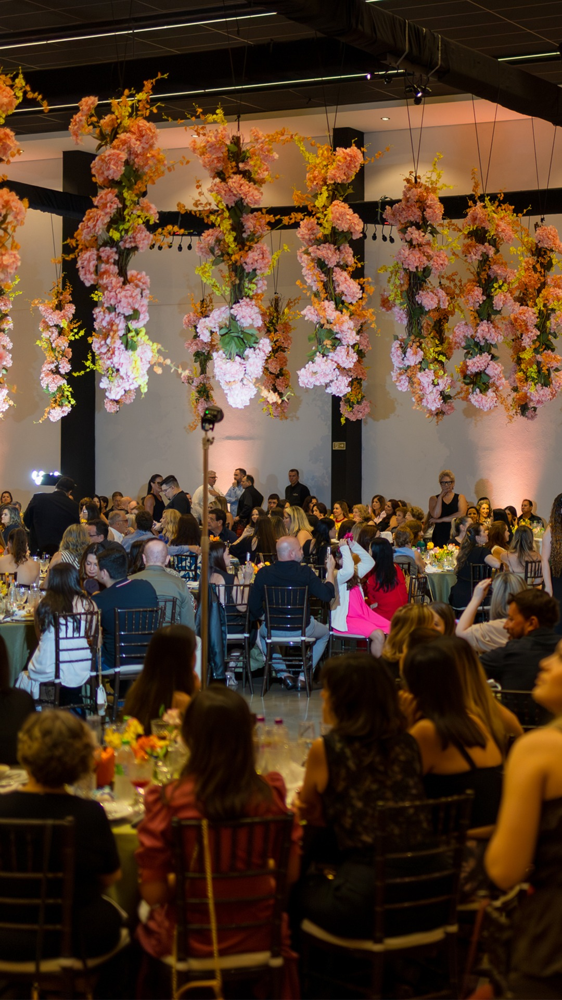
Promover o desenvolvimento integral de crianças, adolescentes e famílias em vulnerabilidade, fornecendo ferramentas educativas, sociais e afetivas para a construção de uma vida digna.
Ser referência em acolhimento e transformação comunitária em Americana e região, consolidando uma sede própria estruturada para ampliar o alcance e impacto social dos nossos projetos.
Amor e empatia incondicionais, transparência absoluta na gestão de recursos, respeito à dignidade humana, integridade ética e fortalecimento dos vínculos comunitários.
Conheça as atividades, oficinas e projetos que movem a nossa organização e impactam vidas.
Apoio escolar lúdico, leitura, raciocínio lógico e desenvolvimento de habilidades socioemocionais no contraturno escolar.
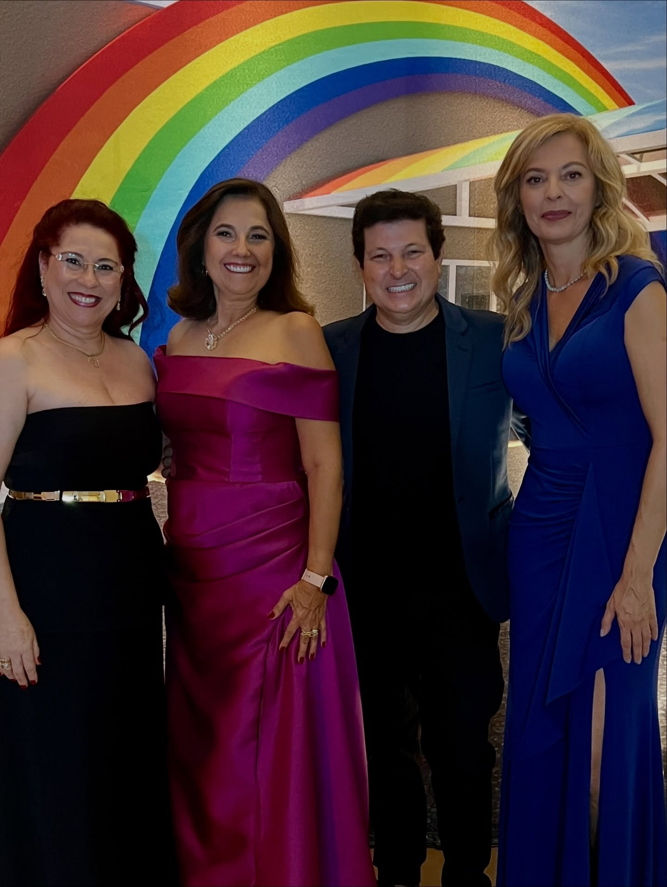
Incentivo à criatividade através de artes plásticas, música, teatro e expressão corporal, despertando talentos e autoestima.
Atividades físicas dinâmicas que estimulam a cooperação em equipe, disciplina, hábitos saudáveis e integração entre os jovens.
Distribuição mensal de alimentos, kits de higiene e agasalhos para famílias cadastradas em extrema situação de vulnerabilidade.
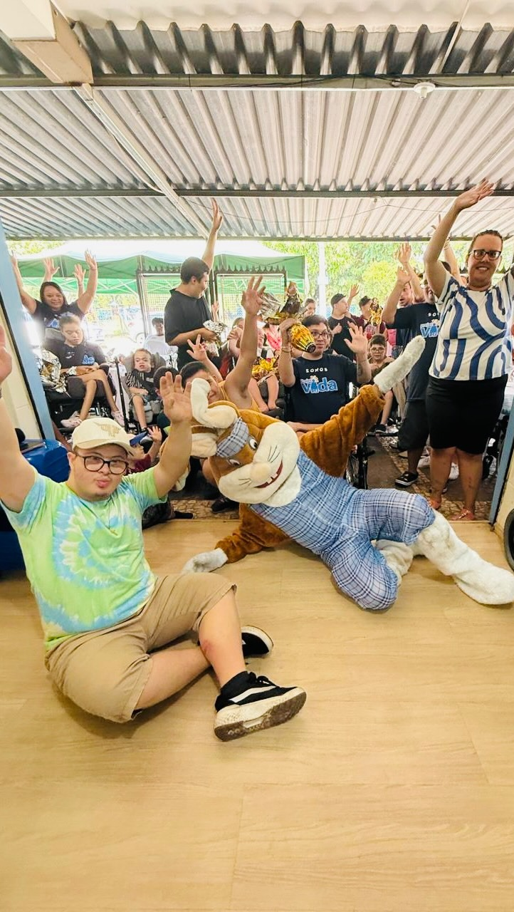
Projeto em andamento para erguer o novo espaço com salas de aula, refeitório, quadra e consultórios para dobrar nossa capacidade.
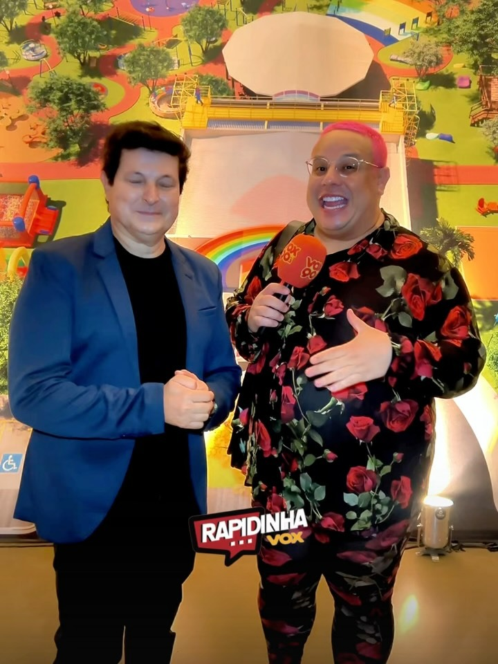
Celebrações de Páscoa, Dia das Crianças, Natal Solidário e bazares beneficentes que unem a comunidade com alegria e acolhimento.
Acompanhe os momentos especiais registrados nas nossas oficinas, eventos e atividades comunitárias.
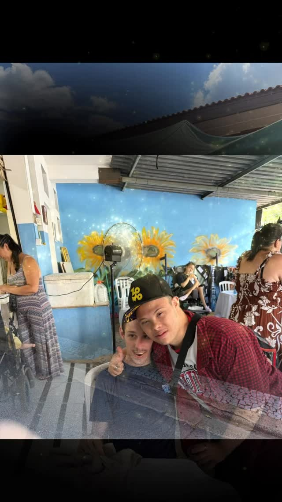
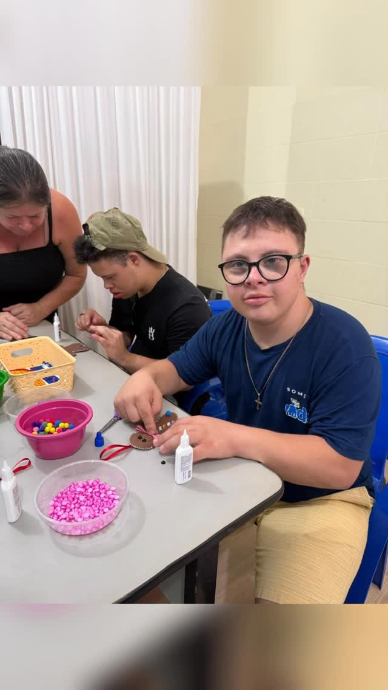
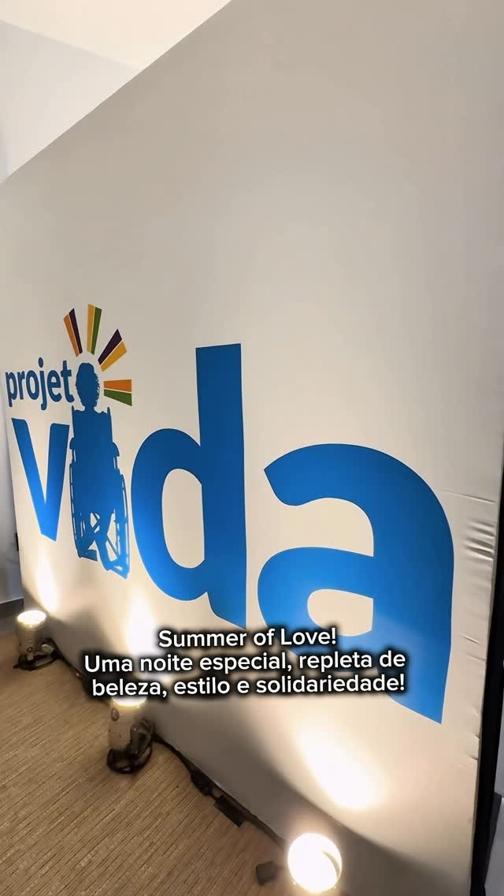
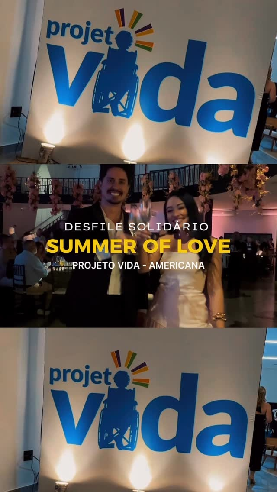
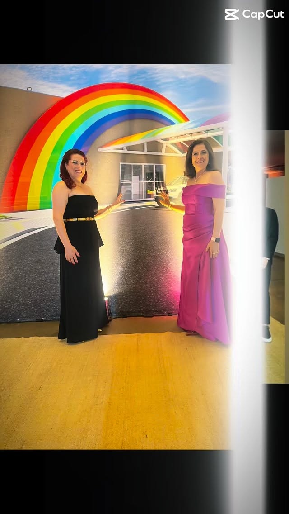
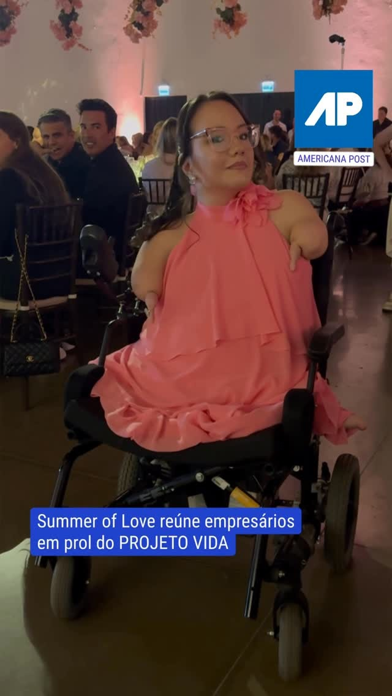
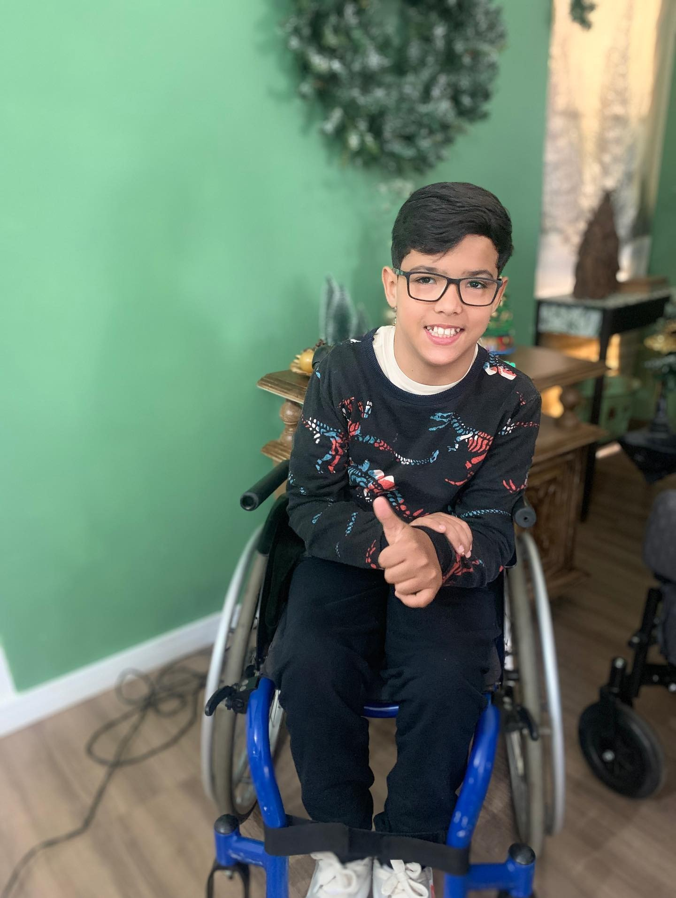
Com apenas uma contribuição pontual ou mensal, você ajuda a manter nossas refeições, oficinas educativas, materiais pedagógicos e a construção da nossa sede própria em Americana.
Após fazer o PIX, você pode enviar o comprovante pelo WhatsApp para receber seu recibo institucional.
| Banco: | Banco do Brasil (001) |
| Favorecido: | Projeto Vida Americana |
| Agência: | Americana - SP |
| Finalidade: | Doações & Apoio Social |
Quer ser um voluntário, doar materiais, firmar uma parceria empresarial ou conhecer nossas instalações? Entre em contato conosco!